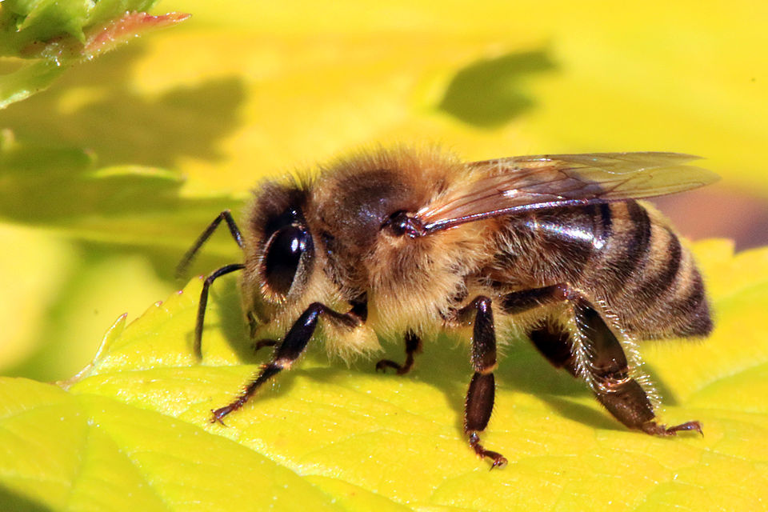
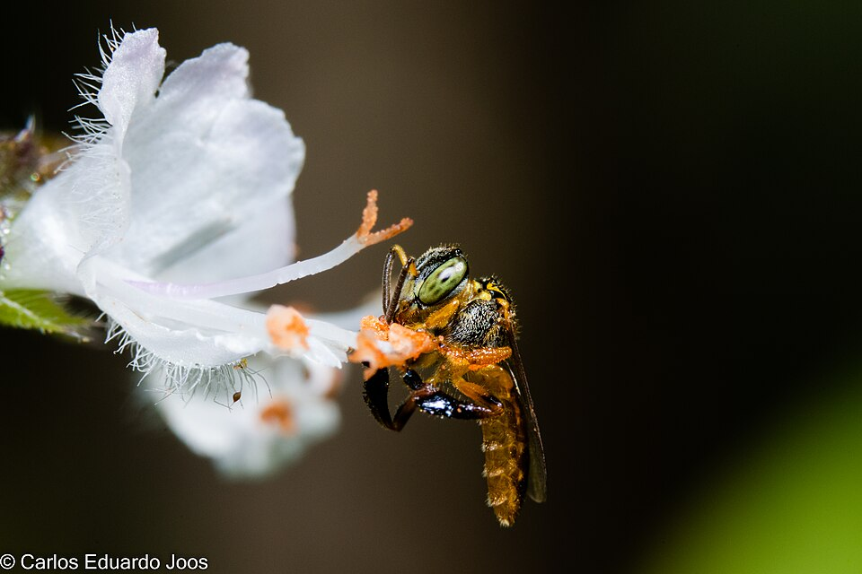

Nuestros tipos de miel

Miel de Apis mellifera
Miel pura y cruda, directa del panal. Rica en enzimas vivas, antioxidantes y minerales.
- 🔋 Energía inmediata y sostenida
- 🛡️ Rica en antioxidantes
- ❤️ Apoyo cardiovascular
- 🌿 Beneficios digestivos

Miel de Mariola
Miel producida por abejas nativas sin aguijón. De sabor suave y propiedades medicinales.
- 🌿 Apoyo digestivo natural
- 🤧 Alivio de garganta y tos
- 🧠 Bienestar general

Miel de Soncuano
Miel de abejas meliponas, con sabor intenso y alto valor nutricional.
- 🔋 Excelente para deportistas
- 🌿 Prebiótico natural
- 💛 Alternativa saludable al azúcar